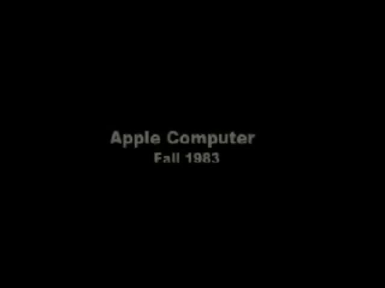
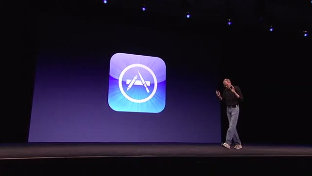
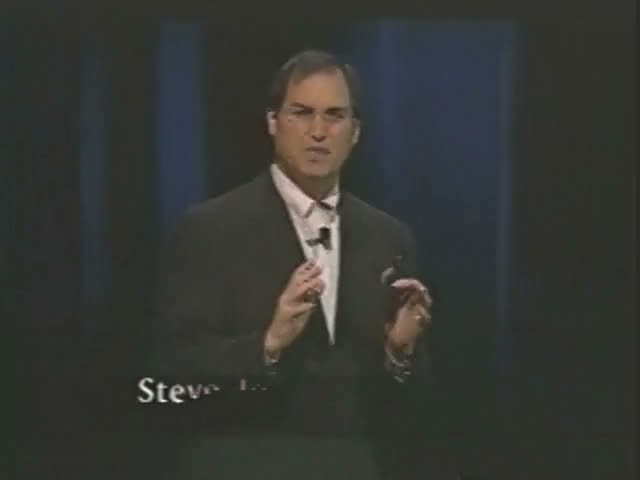
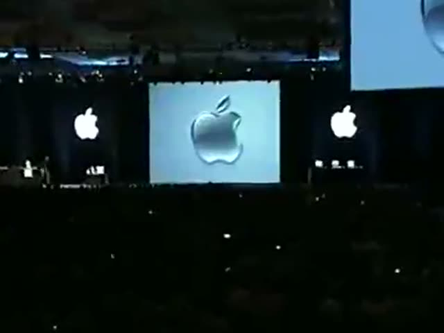
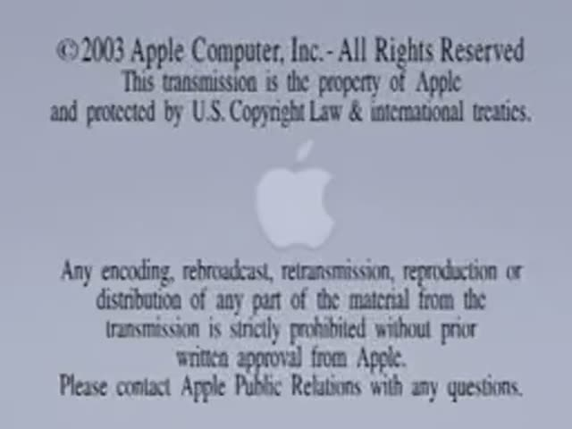
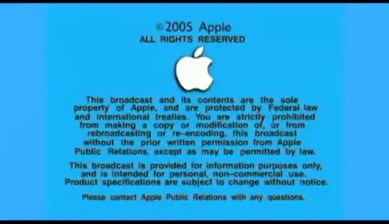
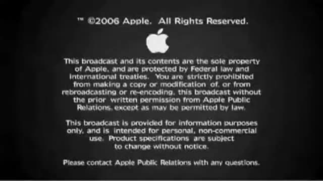
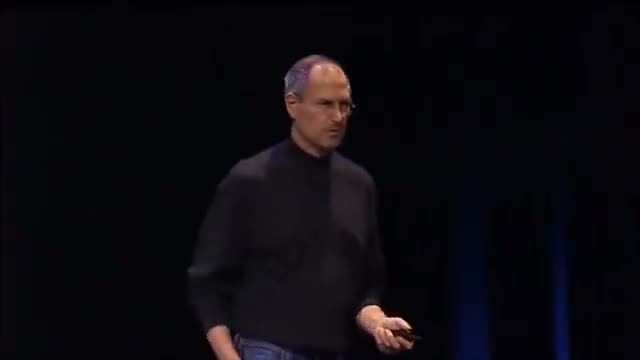
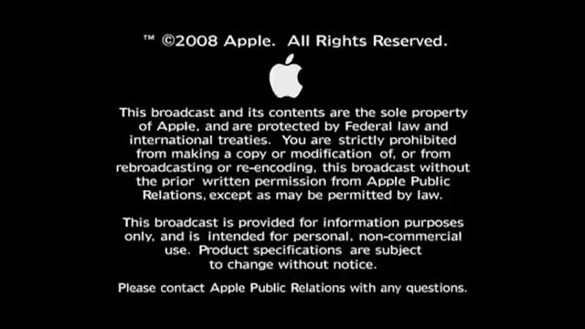

Compressed Steve Jobs keynotes, talks, and appearances.









Enable JavaScript to play the videos. You can still open any file directly from this repo.
git clone https://github.com/breck7/busteve